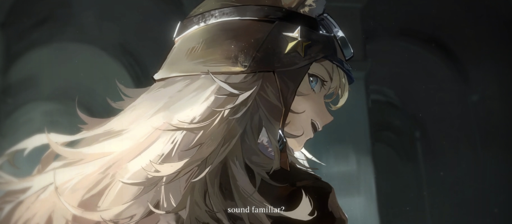
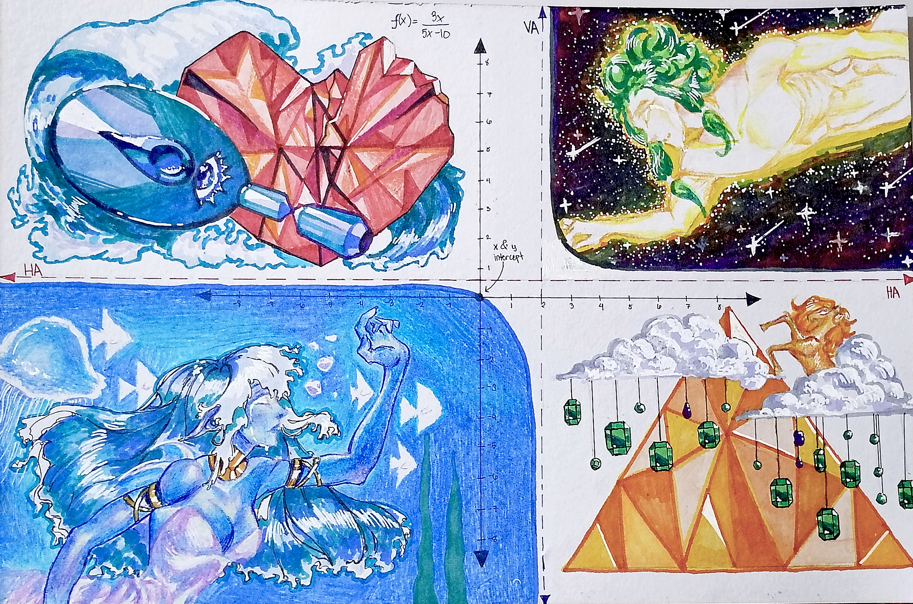

Oh! You want to see my works ? Sure.

This is the most recent artwork I've done, made in may 2024. This took me around 3-4 hours, and it's the least that I like. If I had given much time, I would've enjoyed the process of making this art, but oh well— what can I do, punctuality have points. My wrists took around 2-3 days to recover though, very painful...
Also,
I wanna share the concept behind this art, the theme was Rational Function: Graphing an Asymptote
so an idea came to my mind from the novels or books that I've read is that some characters would say The line where the sky meets the sea
Infact, the sky and the sea will never meet each other no matter how close they can get like an Asymptote
.

Most of what we eat has a nutrient of biomolecules called Glucose
. The output's theme is pirates, I don't know why but it seems to me I've been hyperfixated with the idea of pirates recently. Even though the topic is all about biomolecules— I just think giving the project with a different concept is awesome, don't you think so too?

This output is a classic to me, it's my very first painting on an illustration board! It may not be shocking to you but hey, that's a first for me. The reason about the title being Ethereal Woman
is that somehow I saw this beautiful lady in my dreams, I just think her beauty is out of this world which made me paint this expressionism art.

I saw my old cheap store-bought watercolors unused in my room, I thought of making use of it for fun. Sometimes I would think you need expensive materials to get good art, but once I started painting this and trusted the process I realized you don't need expensive materials at all. Although the quality may not be good but when you have experience and knowledge, you're good to go. Being a creative, I love the part of me where I am able to achieve these kind of accomplishments.
Did you find something interesting about my work?